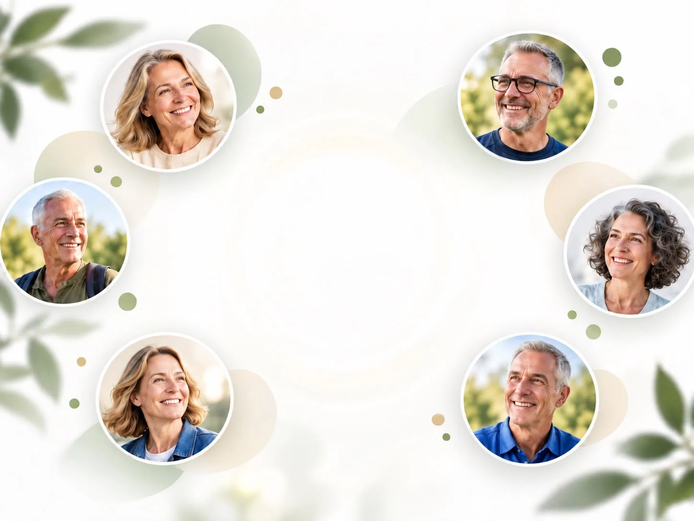
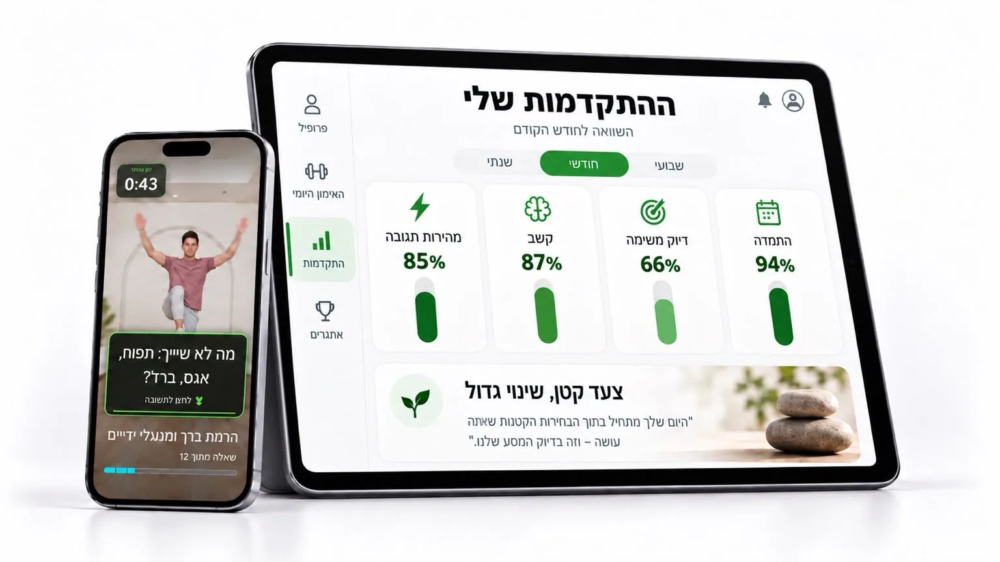
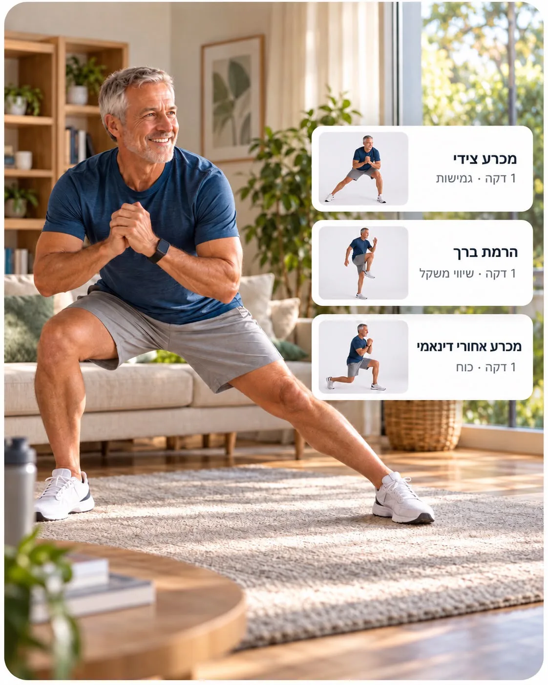
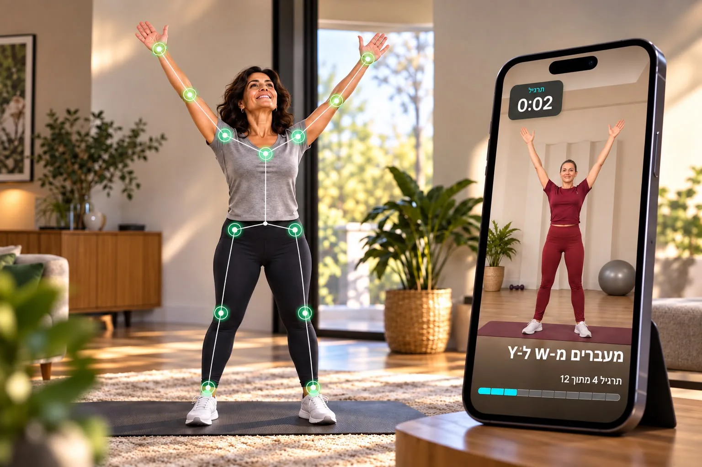
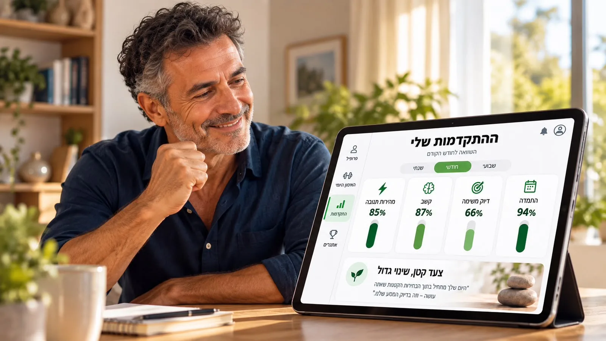
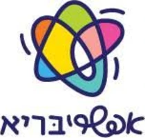
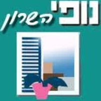
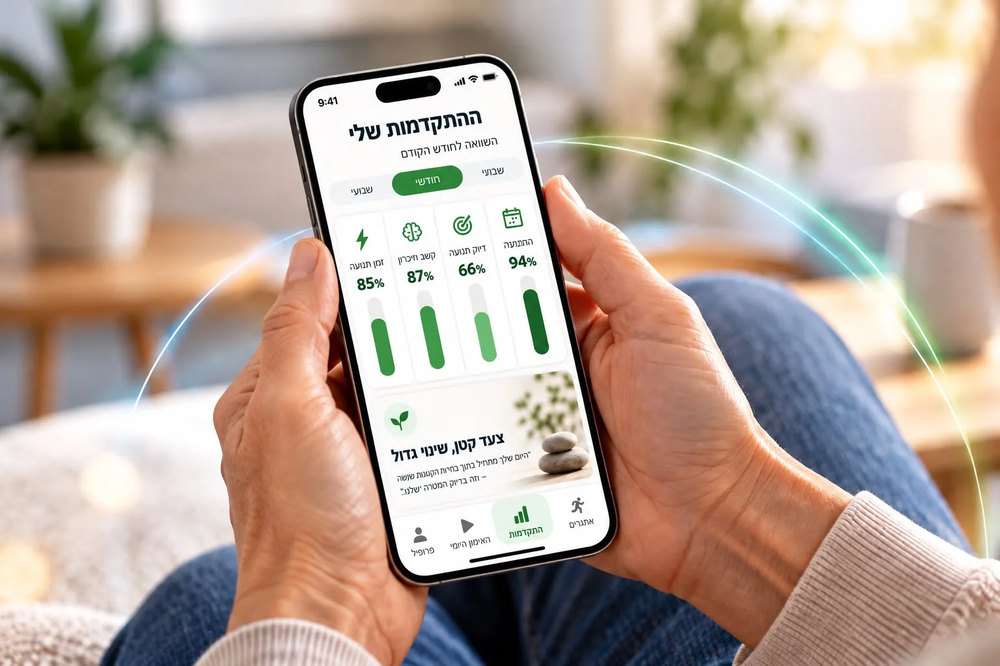

תוכנית אישית לאימון הגוף וחדות המחשבה
רק 10 דקות ביום כדי להישאר פעילים, חדים ובטוחים יותר.

אלפי לקוחות מידי יום בוחרים להשקיע בעצמם ולשפר את איכות החיים

פעילים+ היא פלטפורמה אישית לאימון הגוף וחדות המחשבה, שנבנתה על ידי אנשי מקצוע מתחום הפיזיותרפיה, המוח והבריאות, במטרה לעזור לבני 55+ לחזק את הגוף, לשמור על חדות המחשבה ולהמשיך לתפקד בביטחון לאורך זמן.
בדיקת התאמהמה חשוב לנו?
-
שתמשיכו לעשות את מה שאתם אוהבים
לנוע, לצאת, לטייל, לבלות עם המשפחה ולחיות חיים פעילים, עצמאיים ומהנים יותר.
-
שתשמרו על חדות המחשבה
לחזק את הקשב, הריכוז ומהירות התגובה כדי להרגיש בטוחים יותר בחיי היום־יום.
-
לחיות טוב יותר, בכל יום
כששומרים על שגרת חיים פעילה, מרוויחים יותר אנרגיה, יותר ביטחון ויותר איכות חיים לכם ולמשפחה שלכם.
כמו ב־Hinge: הסעיף הפעיל מסומן, והתמונה לידו מתחלפת איתו כל כמה שניות.
מעטפת מקצועית במיוחד בשבילכם
-

תוכנית אישית בהתאמה חכמה
התוכנית מותאמת לרמה האישית שלכם גם באימון הגופני וגם באימון המוח.
המערכת לומדת את הביצועים שלכם, מספקת משוב, ומדייקת את התוכנית מאימון לאימון.
-

טכנולוגיה שמחזקת את הביטחון
המצלמה החכמה שלנו מזהה את התנועה בזמן אמת ומספקת משוב אישי במהלך האימון, כדי לעזור לכם לבצע כל תרגיל בצורה מדויקת יותר ולהפיק ממנו יותר.
-

מדידה והתקדמות לאורך זמן
המערכת עוקבת אחר מדדים כמו קשב, זיכרון, מהירות תגובה, איכות התנועה והשליטה בגוף כדי להראות לכם מה משתפר ואיפה כדאי להתמקד יותר.
מה אומרים הלקוחות שלנו
אורלי אזולאיGביקורת בגוגל אני מאוד נהנית מפעילים+. האימונים קצרים אבל מרגישים אפקטיביים, ואחרי תקופה אני מרגישה יותר אנרגטית ויותר חדה. כיף לעשות משהו טוב בשביל עצמי כל יום.
אדם לררGביקורת בגוגל אפליקציה מצוינת. השילוב של תנועה עם שאלות וחשיבה תוך כדי הופך את האימון למעניין ומאתגר. מרגישים שעובדים גם על הגוף וגם על הראש.
אילנה אוסטרייךGביקורת בגוגל התחלתי להתאמן עם פעילים+ וממש הופתעתי לטובה. אני מרגישה יותר פעילה, יותר חדה ועם יותר ביטחון ביכולות שלי. פתאום הגיל מרגיש קצת פחות מאיים.
אביבה סטלקולfביקורת בפייסבוק עשר דקות ביום שהפכו לחלק מהשגרה שלי. האימונים נעימים, מגוונים ולא קשים מדי, אבל עדיין מרגישים שעושים משהו משמעותי לגוף ולחשיבה.
אפריים אלאלוףGביקורת בגוגל מה שאני הכי אוהב בפעילים+ זה שהאימון מתאים את עצמו אליי ומאתגר אותי בהדרגה. אני מרגיש יותר אנרגיה ביום־יום ויותר חדות, ובעיקר שיש לי דרך פשוטה להרגיש שאני עושה את החובה שלי לגוף ולמוח.
רותי בן יעקבfביקורת בפייסבוק פעילים+ הכניסה לי משהו חדש לשגרה. אני מרגישה יותר אנרגטית וחדה, והתרגילים מאתגרים אותי בלי להרגיש קשים מדי. הכי חשוב מבחינתי שזו השקעה קטנה בכל יום שנותנת לי תחושה שאני שומרת על עצמי לאורך זמן.
סרטוני ממליצים (3-4): בהמתנה לפי הבריף. כשיגיעו, הם נכנסים כאן כשורת עיגולים עם כפתור ניגון, כמו באפקטיבייט.
שיתופי פעולה


השאירו פרטים ונחזור אליכם לתיאום
מעדיפים לדבר? 073-729-66-99, ימים א׳–ה׳, 10:00–17:00
שאלות ותשובות
מה זה פעילים+?
פעילים+ היא תוכנית אישית לאימון הגוף והמוח. האימונים משלבים תנועה עם משימות של זיכרון, קשב, קואורדינציה ומהירות תגובה – באימון קצר שאפשר לבצע בבית.
למי פעילים+ מתאימה?
התוכנית מיועדת בעיקר למי שרוצה להמשיך להיות פעיל, חד ועצמאי, ולחזק באופן קבוע את היכולות הגופניות והקוגניטיביות.
כמה זמן צריך להתאמן?
האימון היומי אורך כ־10 דקות. המטרה היא ליצור שגרה שקל להתמיד בה לאורך זמן.
צריך להיות בכושר כדי להתחיל?
לא. התוכנית מותאמת ליכולות ולרמה שלכם, ומתקדמת בהדרגה בהתאם לביצועים.
איך האימון מותאם אליי?
בתחילת הדרך אנחנו לומדים על היכולות, המטרות וההעדפות שלכם. בהמשך המערכת נעזרת גם בביצועים שלכם כדי להתאים את רמת האימון.
מה מיוחד באימונים של פעילים+?
במקום לעבוד רק על הגוף או רק על המוח, חלק מהתרגילים משלבים ביניהם. בזמן התנועה תתבקשו גם לחשוב, לזכור, להגיב ולענות על שאלות.
איך האפליקציה יודעת אם אני מבצע את התרגיל נכון?
בתרגילים נתמכים, המערכת משתמשת במצלמה כדי לזהות את התנועה ולנתח מדדים הקשורים לאופן הביצוע. כך ניתן לקבל משוב ולעקוב אחר ההתקדמות לאורך זמן.
אפשר לראות את ההתקדמות שלי?
כן. פעילים+ עוקבת אחר הביצועים ומציגה לכם כיצד אתם מתקדמים בתחומים כמו תנועה, קואורדינציה, קשב, זיכרון ומהירות תגובה.
צריך ציוד מיוחד?
ברוב האימונים לא. בהתאם לתוכנית שלכם ייתכן שימוש בכיסא או בציוד ביתי פשוט.
אפשר להתאמן מהבית?
כן. פעילים+ נבנתה במיוחד כדי לאפשר אימון נוח בבית, בזמן שמתאים לכם.
האם פעילים+ מחליפה פיזיותרפיה או טיפול רפואי?
לא. פעילים+ היא תוכנית אימון ואינה תחליף לאבחון, טיפול רפואי או פיזיותרפיה כאשר הם נדרשים.
מה קורה אם תרגיל מסוים קשה לי?
המטרה היא שהאימון יתאים ליכולת שלכם. אם תרגיל מרגיש קשה מדי, ניתן להתאים את רמת הקושי ולהמשיך בהדרגה.
איך מתחילים?
עונים על כמה שאלות קצרות, מקבלים תוכנית שמתאימה לכם ומתחילים להתאמן. משם פעילים+ כבר מלווה אתכם לאורך הדרך.
המסלול שמתאים בדיוק בשבילך
הכנו בעבורכם 2 מסלולים כדי שאתם תוכלו להחליט מה מתאים לכם.
-
חיסכון של 480 ₪
שנתי
לבחירת מסלולים59 ₪ לחודש
708 ₪ לשנה, בהתחייבות ל־12 חודשים
-

חודשי
לבחירת מסלולים99 ₪ לחודש
חיוב חודשי, ללא התחייבות
הבריף כותב "חיסכון של 600 ש״ח". לפי המחירים עצמם (99 × 12 − 708) החיסכון הוא 480 ₪, וזה מה שמוצג.